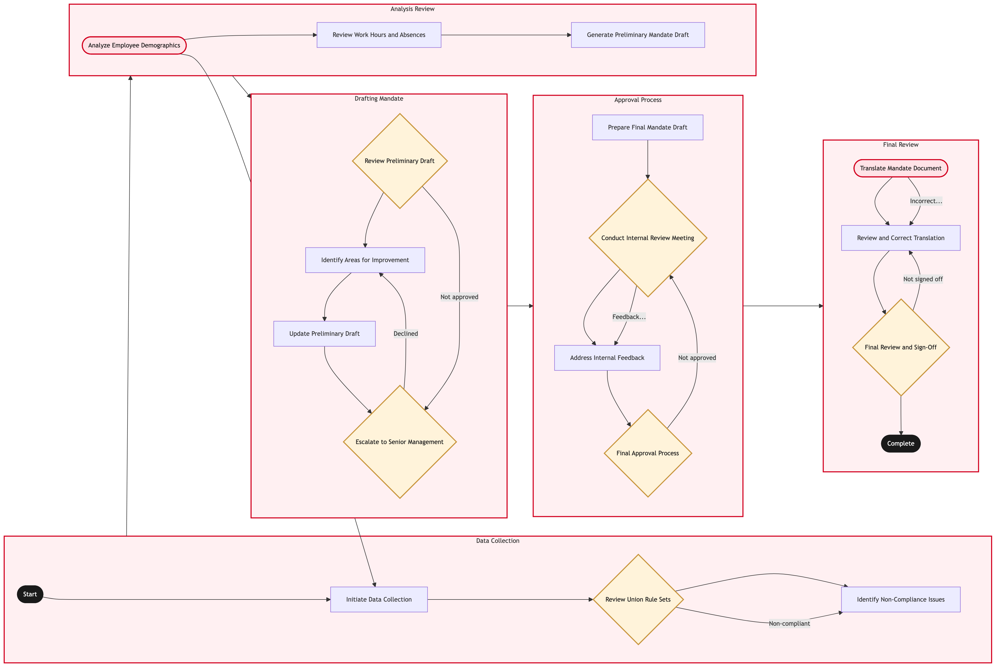

Updated 2026-08-21
Collective Bargaining Preparation and Mandate
Process flow
Click to zoom

Process steps
▼
Phase 1 — Data Collection
3 steps
| Step | Activity | Role | System | Input | Output | KPI | Dec | Exc | Pain point |
|---|---|---|---|---|---|---|---|---|---|
| 1.1 | Initiate Data Collection | HR Analyst | DayforceB | Notification of upcoming bargaining session | Collected data on employee demographics, work hours, and union membership | Data collection completes within 3 days | N | N | Time-consuming to gather comprehensive historical data from Dayforce. |
| 1.2 | Review Union Rule Sets | Labour Relations Specialist | DayforceB | Collected data | Compliance with union rule sets for each bargaining unit | Rule set review completes within 2 days | Y | N | Complex union rules require detailed interpretation. |
| 1.3 | Identify Non-Compliance Issues | Labour Relations Specialist | DayforceB | Review of union rule sets | List of non-compliance issues and potential solutions | Issue identification completes within 1 day | N | N | Requires deep understanding of union rules. |
▼
Phase 2 — Analysis & Review
3 steps
| Step | Activity | Role | System | Input | Output | KPI | Dec | Exc | Pain point |
|---|---|---|---|---|---|---|---|---|---|
| 2.1 | Analyze Employee Demographics | HR Analyst | Microsoft 365C | Collected data | Demographic analysis report | Analysis completes within 4 days | N | Y | Large dataset requires efficient processing. |
| 2.2 | Review Work Hours and Absences | HR Analyst | DayforceB | Collected data | Work hours and absence report | Report completes within 3 days | N | N | Data accuracy depends on timely updates in Dayforce. |
| 2.3 | Generate Preliminary Mandate Draft | Labour Relations Specialist | PhenomB | Analysis reports and union rule compliance | Preliminary mandate draft document | Draft completes within 5 days | N | N | Requires coordination with multiple departments. |
▼
Phase 3 — Drafting Mandate
4 steps
| Step | Activity | Role | System | Input | Output | KPI | Dec | Exc | Pain point |
|---|---|---|---|---|---|---|---|---|---|
| 3.1 | Review Preliminary Draft | Labour Relations Manager | Microsoft 365C | Preliminary mandate draft | Reviewed and annotated draft document | Review completes within 2 days | Y | N | Detailed review requires significant time. |
| 3.2 | Identify Areas for Improvement | Labour Relations Manager | Microsoft 365C | Reviewed draft | List of areas needing improvement and recommendations | Improvement identification completes within 1 day | N | N | Requires balancing union demands with business needs. |
| 3.3 | Update Preliminary Draft | Labour Relations Specialist | PhenomB | Areas for improvement and recommendations | Updated preliminary mandate draft document | Draft update completes within 4 days | N | N | Revisions require re-evaluation against union rules. |
| 3.4 | Escalate to Senior Management | Labour Relations Director | Microsoft 365C | Reviewed draft | Approval request sent to senior management | Approval request completes within 1 day | Y | N | Senior management approval is critical for mandate strength. |
▼
Phase 4 — Approval Process
4 steps
| Step | Activity | Role | System | Input | Output | KPI | Dec | Exc | Pain point |
|---|---|---|---|---|---|---|---|---|---|
| 4.1 | Prepare Final Mandate Draft | Labour Relations Specialist | PhenomB | Updated preliminary draft and senior management feedback | Final mandate draft document | Draft preparation completes within 5 days | N | N | Final drafts must be precise to meet union expectations. |
| 4.2 | Conduct Internal Review Meeting | Labour Relations Team | Microsoft TeamsU | Final mandate draft | Meeting minutes and feedback | Review meeting completes within 1 day | Y | N | Team consensus is needed for a unified approach. |
| 4.3 | Address Internal Feedback | Labour Relations Specialist | PhenomB | Meeting feedback | Updated final mandate draft document | Feedback incorporation completes within 2 days | N | N | Internal feedback may require significant changes. |
| 4.4 | Final Approval Process | Senior Management | Microsoft 365C | Updated final mandate draft | Approved mandate document | Approval process completes within 2 days | Y | N | Final approval is a gatekeeper for mandate submission. |
▼
Phase 5 — Final Review
3 steps
| Step | Activity | Role | System | Input | Output | KPI | Dec | Exc | Pain point |
|---|---|---|---|---|---|---|---|---|---|
| 5.1 | Translate Mandate Document | Translation Specialist | Microsoft 365C | Approved mandate document | Bilingual mandate document | Translation completes within 3 days | N | Y | Accurate translation is crucial for compliance. |
| 5.2 | Review and Correct Translation | Labour Relations Specialist | Microsoft 365C | Translated document | Corrected bilingual mandate document | Correction completes within 1 day | N | N | Translation errors can undermine the entire process. |
| 5.3 | Final Review and Sign-Off | Labour Relations Director | Microsoft 365C | Corrected bilingual mandate document | Signed-off mandate document | Review completes within 1 day | Y | N | Final sign-off is necessary before submission. |
Swim lanes
HR Analyst1.1 2.1 2.2
Labour Relations Specialist1.2 1.3 2.3 3.3 4.1 4.3 5.2
Labour Relations Manager3.1 3.2
Labour Relations Director3.4 5.3
Labour Relations Team4.2
Senior Management4.4
Translation Specialist5.1
Systems touched
DayforceBMicrosoft 365CPhenomBMicrosoft TeamsU
Key performance indicators
- Data collection completes within 3 days
- Rule set review completes within 2 days
- Analysis completes within 4 days
- Report completes within 3 days
- Draft completes within 5 days
Risks and control points
- Inaccurate data from Dayforce could lead to non-compliance issues.
- Complex union rules may require extensive interpretation and time.
- Large dataset processing in Microsoft 365 could be inefficient.
- Senior management approval delay could impact bargaining timeline.
- Translation errors could result in compliance violations.
Air Canada Process Wiki — process and systems reference compiled from public sources
for IT Application Management and User Support pre-sales discovery.
Built 2026-08-21. Every system carries an evidence tier: tier C is an industry pattern and tier U is an open
question, and neither should be asserted as fact about Air Canada without confirmation in discovery.
Not affiliated with or endorsed by Air Canada. Air Canada, Aeroplan and Altitude are trademarks of Air Canada.